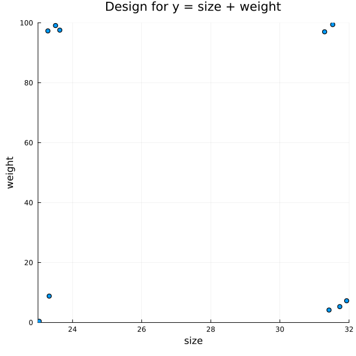
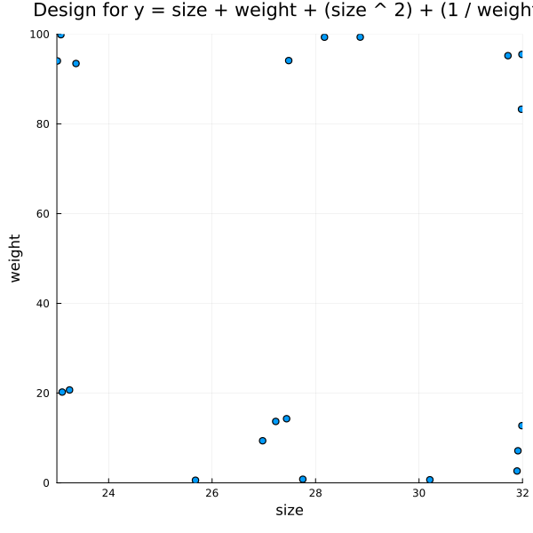
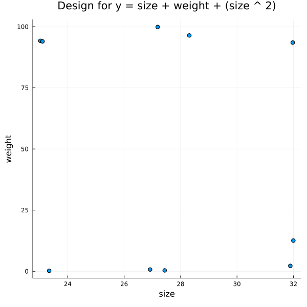

Optimal Design with KL-Exchange
Generating Random Designs (Uniform)
using ExperimentalDesign, StatsModels, GLM, DataFrames, Distributions, Random, StatsPlots
design_distribution = DesignDistribution((size = Uniform(23, 32), weight = Uniform(0, 100)))DesignDistribution
Formula: 0 ~ size + weight
Factor Distributions:
size: Uniform{Float64}(a=23.0, b=32.0)
weight: Uniform{Float64}(a=0.0, b=100.0)rand(design_distribution, 3)ExperimentalDesign.RandomDesign
Dimension: (3, 2)
Factors: (size = Uniform{Float64}(a=23.0, b=32.0), weight = Uniform{Float64}(a=0.0, b=100.0))
Formula: 0 ~ size + weight
Design Matrix:
3×2 DataFrame
Row │ size weight
│ Float64 Float64
─────┼──────────────────
1 │ 23.443 25.6586
2 │ 28.3205 64.9684
3 │ 29.9433 31.5235design = rand(design_distribution, 400)
p = @df design.matrix scatter(:size,
:weight,
size = (600, 600),
xlabel = "size",
ylabel = "weight",
xlim = [23.0, 32.0],
ylim = [0.0, 100.0],
legend = false,
title = "Uniformly Sampled Design")
png(p, "plot1.png")
nothingGenerating Experiments for a Linear Hypothesis
design = rand(design_distribution, 400);
f = @formula 0 ~ size + weight
optimal_design = OptimalDesign(design, f, 10)
p = @df optimal_design.matrix scatter(:size,
:weight,
size = (600, 600),
xlabel = "size",
ylabel = "weight",
xlim = [23.0, 32.0],
ylim = [0.0, 100.0],
legend = false,
title = "Design for y = size + weight")
png(p, "plot2.png")
nothing
Generating Experiments for Other Terms
design = rand(design_distribution, 400);
f = @formula 0 ~ size + weight + size ^ 2 + (1 / weight)
optimal_design = OptimalDesign(design, f, 20)
p = @df optimal_design.matrix scatter(:size,
:weight,
size = (600, 600),
xlabel = "size",
ylabel = "weight",
xlim = [23.0, 32.0],
ylim = [0.0, 100.0],
legend = false,
title = "Design for y = size + weight + (size ^ 2) + (1 / weight)")
png(p, "plot3.png")
nothing
design = rand(design_distribution, 800);
f = @formula 0 ~ size + weight + size ^ 2
optimal_design = OptimalDesign(design, f, 10)
p = @df optimal_design.matrix scatter(:size,
:weight,
size = (600, 600),
xlabel = "size",
ylabel = "weight",
legend = false,
title = "Design for y = size + weight + (size ^ 2)")
png(p, "plot4.png")
nothing
Designs with Categorical Factors
design_distribution = DesignDistribution((f1 = DiscreteUniform(0, 5),
f2 = CategoricalFactor(["cf", "cg", "ca"])))DesignDistribution
Formula: 0 ~ f1 + f2
Factor Distributions:
f1: DiscreteUniform(a=0, b=5)
f2: CategoricalFactor(
values: ["cf", "cg", "ca"]
distribution: DiscreteUniform(a=1, b=3)
)
design = rand(design_distribution, 300);
f = @formula 0 ~ f1 + f1 ^ 2 + f2
optimal_design = OptimalDesign(design, f, 10)OptimalDesign
Dimension: (10, 2)
Factors: (f1 = DiscreteUniform(a=0, b=5), f2 = CategoricalFactor(
values: ["cf", "cg", "ca"]
distribution: DiscreteUniform(a=1, b=3)
)
)
Formula: 0 ~ f1 + :(f1 ^ 2) + f2
Selected Candidate Rows: [85, 137, 189, 254, 252, 194, 9, 55, 12, 2]
Optimality Criteria: Dict(:D => 0.029985918523306496)
Design Matrix:
10×2 DataFrame
Row │ f1 f2
│ Any Any
─────┼──────────
1 │ 2 cf
2 │ 2 cg
3 │ 3 cf
4 │ 1 cg
5 │ 0 cf
6 │ 1 cf
7 │ 4 cg
8 │ 0 ca
9 │ 5 ca
10 │ 5 cgp = @df optimal_design.matrix scatter(:f1,
:f2,
size = (600, 600),
xlabel = "f1",
ylabel = "f2",
legend = false,
title = "Optimal Design for y = f1 + f2")
png(p, "plot5.png")
nothingScreening with Plackett-Burman Designs
Generating Plackett-Burman Designs
A Plackett-Burman design is an orthogonal design matrix for factors $f_1,\dots,f_N$. Factors are encoded by high and low values, which can be mapped to the interval $[-1, 1]$. For designs in this package, the design matrix is a DataFrame from the DataFrame package. For example, let's create a Plackett-Burman design for 6 factors:
design = PlackettBurman(6)
design.matrix| Row | factor1 | factor2 | factor3 | factor4 | factor5 | factor6 | dummy1 |
|---|---|---|---|---|---|---|---|
| Int64 | Int64 | Int64 | Int64 | Int64 | Int64 | Int64 | |
| 1 | 1 | 1 | 1 | 1 | 1 | 1 | 1 |
| 2 | -1 | 1 | -1 | 1 | 1 | -1 | -1 |
| 3 | 1 | -1 | 1 | 1 | -1 | -1 | -1 |
| 4 | -1 | 1 | 1 | -1 | -1 | -1 | 1 |
| 5 | 1 | 1 | -1 | -1 | -1 | 1 | -1 |
| 6 | 1 | -1 | -1 | -1 | 1 | -1 | 1 |
| 7 | -1 | -1 | -1 | 1 | -1 | 1 | 1 |
| 8 | -1 | -1 | 1 | -1 | 1 | 1 | -1 |
Note that it is not possible to construct exact Plackett-Burman designs for all numbers of factors. In the example above, we needed a seventh extra "dummy" column to construct the design for six factors.
Using the PlackettBurman constructor enables quick construction of minimal screening designs for scenarios where we ignore interactions. We can access the underlying formula, which is a Term object from the StatsModels package:
println(design.formula)0 ~ -1 + factor1 + factor2 + factor3 + factor4 + factor5 + factor6 + dummy1Notice we ignore interactions and include the dummy factor in the model. Strong main effects attributed to dummy factors may indicate important interactions.
We can obtain a tuple with the names of dummy factors:
design.dummy_factors(:dummy1,)We can also get the main factors tuple:
design.factors(:factor1, :factor2, :factor3, :factor4, :factor5, :factor6)You can check other constructors on the docs.
Computing Main Effects
Suppose that the response variable on the experiments specified in our screening design is computed by:
$y = 1.2 + (2.3f1) + (-3.4f2) + (7.12f3) + (-0.03f4) + (1.1f5) + (-0.5f6) + \varepsilon $
The coefficients we want to estimate are:
| Intercept | factor1 | factor2 | factor3 | factor4 | factor5 | factor6 |
|---|---|---|---|---|---|---|
| 1.2 | 2.3 | -3.4 | 7.12 | -0.03 | 1.1 | -0.5 |
The corresponding Julia function is:
function y(x)
return (1.2) +
(2.3 * x[1]) +
(-3.4 * x[2]) +
(7.12 * x[3]) +
(-0.03 * x[4]) +
(1.1 * x[5]) +
(-0.5 * x[6]) +
(1.1 * randn())
endy (generic function with 1 method)We can compute the response column for our design using the cell below. Recall that the default is to call the response column :response. We are going to set the seeds each time we run y(x), so we analyse same results. Play with different seeds to observe variability of estimates.
Random.seed!(192938)
design.matrix[!, :response] = y.(eachrow(design.matrix[:, collect(design.factors)]))
design.matrix| Row | factor1 | factor2 | factor3 | factor4 | factor5 | factor6 | dummy1 | response |
|---|---|---|---|---|---|---|---|---|
| Int64 | Int64 | Int64 | Int64 | Int64 | Int64 | Int64 | Float64 | |
| 1 | 1 | 1 | 1 | 1 | 1 | 1 | 1 | 8.53078 |
| 2 | -1 | 1 | -1 | 1 | 1 | -1 | -1 | -11.1296 |
| 3 | 1 | -1 | 1 | 1 | -1 | -1 | -1 | 14.0101 |
| 4 | -1 | 1 | 1 | -1 | -1 | -1 | 1 | 2.30315 |
| 5 | 1 | 1 | -1 | -1 | -1 | 1 | -1 | -7.15356 |
| 6 | 1 | -1 | -1 | -1 | 1 | -1 | 1 | -0.972234 |
| 7 | -1 | -1 | -1 | 1 | -1 | 1 | 1 | -7.84967 |
| 8 | -1 | -1 | 1 | -1 | 1 | 1 | -1 | 9.78249 |
Now, we use the lm function from the GLM package to fit a linear model using the design's matrix and formula:
lm(term(:response) ~ design.formula.rhs, design.matrix)StatsModels.TableRegressionModel{LinearModel{GLM.LmResp{Vector{Float64}}, GLM.DensePredChol{Float64, LinearAlgebra.CholeskyPivoted{Float64, Matrix{Float64}}}}, Matrix{Float64}}
response ~ 0 + factor1 + factor2 + factor3 + factor4 + factor5 + factor6 + dummy1
Coefficients:
──────────────────────────────────────────────────────────────────────
Coef. Std. Error t Pr(>|t|) Lower 95% Upper 95%
──────────────────────────────────────────────────────────────────────
factor1 2.66359 0.940183 2.83 0.2160 -9.28257 14.6097
factor2 -2.80249 0.940183 -2.98 0.2061 -14.7486 9.14367
factor3 7.71644 0.940183 8.21 0.0772 -4.22971 19.6626
factor4 -0.0497774 0.940183 -0.05 0.9663 -11.9959 11.8964
factor5 0.612681 0.940183 0.65 0.6323 -11.3335 12.5588
factor6 -0.112675 0.940183 -0.12 0.9241 -12.0588 11.8335
dummy1 -0.437176 0.940183 -0.46 0.7229 -12.3833 11.509
──────────────────────────────────────────────────────────────────────The table below shows the coefficients estimated by the linear model fit using the Plackett-Burman Design. The purpose of a screening design is not to estimate the actual coefficients, but instead to compute factor main effects. Note that standard errors are the same for every factor estimate. This happens because the design is orthogonal.
| Intercept | factor1 | factor2 | factor3 | factor4 | factor5 | factor6 | dummy1 | |
|---|---|---|---|---|---|---|---|---|
| Original | 1.2 | 2.3 | -3.4 | 7.12 | -0.03 | 1.1 | -0.5 | $-$ |
| Plackett-Burman Main Effects | $-$ | 2.66359 | -2.80249 | 7.71644 | -0.0497774 | 0.612681 | -0.112675 | -0.437176 |
We can use the coefficient magnitudes to infer that factor 3 probably has a strong main effect, and that factor 6 has not. Our dummy column had a relatively small coefficient estimate, so we could attempt to ignore interactions on subsequent experiments.
Fitting a Linear Model
We can also try to fit a linear model on our design data in order to estimate coefficients. We would need to drop the dummy column and add the intercept term:
lm(term(:response) ~ sum(term.(design.factors)), design.matrix)StatsModels.TableRegressionModel{LinearModel{GLM.LmResp{Vector{Float64}}, GLM.DensePredChol{Float64, LinearAlgebra.CholeskyPivoted{Float64, Matrix{Float64}}}}, Matrix{Float64}}
response ~ 1 + factor1 + factor2 + factor3 + factor4 + factor5 + factor6
Coefficients:
──────────────────────────────────────────────────────────────────────────
Coef. Std. Error t Pr(>|t|) Lower 95% Upper 95%
──────────────────────────────────────────────────────────────────────────
(Intercept) 0.940183 0.437176 2.15 0.2771 -4.61466 6.49503
factor1 2.66359 0.437176 6.09 0.1036 -2.89126 8.21843
factor2 -2.80249 0.437176 -6.41 0.0985 -8.35733 2.75236
factor3 7.71644 0.437176 17.65 0.0360 2.1616 13.2713
factor4 -0.0497774 0.437176 -0.11 0.9278 -5.60462 5.50507
factor5 0.612681 0.437176 1.40 0.3946 -4.94217 6.16753
factor6 -0.112675 0.437176 -0.26 0.8394 -5.66752 5.44217
──────────────────────────────────────────────────────────────────────────Our table so far looks like this:
| Intercept | factor1 | factor2 | factor3 | factor4 | factor5 | factor6 | dummy1 | |
|---|---|---|---|---|---|---|---|---|
| Original | 1.2 | 2.3 | -3.4 | 7.12 | -0.03 | 1.1 | -0.5 | $-$ |
| Plackett-Burman Main Effects | $-$ | 2.66359 | -2.80249 | 7.71644 | -0.0497774 | 0.612681 | -0.112675 | -0.437176 |
| Plackett-Burman Estimate | 0.940183 | 2.66359 | -2.80249 | 7.71644 | -0.0497774 | 0.612681 | -0.112675 | $-$ |
Notice that, since the standard errors are the same for all factors, factors with stronger main effects are better estimated. Notice that, despite the "good" coefficient estimates, the confidence intervals are really large.
This is a biased comparison where the screening design "works" for coefficient estimation as well, but we would rather use fractional factorial or optimal designs to estimate the coefficients of factors with strong effects. Screening should be used to compute main effects and identifying which factors to test next.
Generating Random Designs
We can also compare the coefficients produced by the same linear model fit, but using a random design. For more information, check the docs.
Random.seed!(8418172)
design_distribution = DesignDistribution(DiscreteNonParametric([-1, 1], [0.5, 0.5]), 6)
random_design = rand(design_distribution, 8)
random_design.matrix[!, :response] = y.(eachrow(random_design.matrix[:, :]))
random_design.matrix| Row | factor1 | factor2 | factor3 | factor4 | factor5 | factor6 | response |
|---|---|---|---|---|---|---|---|
| Int64 | Int64 | Int64 | Int64 | Int64 | Int64 | Float64 | |
| 1 | 1 | 1 | -1 | -1 | 1 | -1 | -3.85946 |
| 2 | -1 | -1 | 1 | 1 | 1 | -1 | 11.0065 |
| 3 | -1 | -1 | 1 | -1 | -1 | -1 | 8.77547 |
| 4 | 1 | -1 | 1 | -1 | 1 | 1 | 14.2217 |
| 5 | 1 | -1 | 1 | 1 | 1 | 1 | 16.0499 |
| 6 | 1 | -1 | -1 | -1 | -1 | 1 | -1.94982 |
| 7 | -1 | -1 | 1 | -1 | -1 | -1 | 7.37002 |
| 8 | -1 | -1 | -1 | -1 | 1 | 1 | -4.72545 |
lm(term(:response) ~ random_design.formula.rhs, random_design.matrix)StatsModels.TableRegressionModel{LinearModel{GLM.LmResp{Vector{Float64}}, GLM.DensePredChol{Float64, LinearAlgebra.CholeskyPivoted{Float64, Matrix{Float64}}}}, Matrix{Float64}}
response ~ 1 + factor1 + factor2 + factor3 + factor4 + factor5 + factor6
Coefficients:
─────────────────────────────────────────────────────────────────────────
Coef. Std. Error t Pr(>|t|) Lower 95% Upper 95%
─────────────────────────────────────────────────────────────────────────
(Intercept) 3.60184 2.33068 1.55 0.3656 -26.0123 33.2159
factor1 1.9406 1.16534 1.67 0.3443 -12.8665 16.7476
factor2 -0.926522 2.72165 -0.34 0.7911 -35.5083 33.6553
factor3 7.53296 0.92962 8.10 0.0782 -4.27898 19.3449
factor4 0.91412 0.702726 1.30 0.4172 -8.01487 9.84311
factor5 0.55278 0.92962 0.59 0.6585 -11.2592 12.3647
factor6 0.581079 1.68508 0.34 0.7886 -20.8299 21.992
─────────────────────────────────────────────────────────────────────────Now, our table looks like this:
| Intercept | factor1 | factor2 | factor3 | factor4 | factor5 | factor6 | dummy1 | |
|---|---|---|---|---|---|---|---|---|
| Original | 1.2 | 2.3 | -3.4 | 7.12 | -0.03 | 1.1 | -0.5 | $-$ |
| Plackett-Burman Main Effects | $-$ | 2.66359 | -2.80249 | 7.71644 | -0.0497774 | 0.612681 | -0.112675 | -0.437176 |
| Plackett-Burman Estimate | 0.940183 | 2.66359 | -2.80249 | 7.71644 | -0.0497774 | 0.612681 | -0.112675 | $-$ |
| Single Random Design Estimate | 0.761531 | 1.67467 | -3.05027 | 7.72484 | 0.141204 | 1.71071 | -0.558869 | $-$ |
The estimates produced using random designs will have larger confidence intervals, and therefore increased variability. The Plackett-Burman design is fixed, but can be randomised. The variability of main effects estimates using screening designs will depend on measurement or model error.
Generating Full Factorial Designs
In this toy example, it is possible to generate all the possible combinations of six binary factors and compute the response. Although it costs 64 experiments, the linear model fit for the full factorial design should produce the best coefficient estimates.
The simplest full factorial design constructor receives an array of possible factor levels. For more, check the docs.
Random.seed!(2989476)
factorial_design = FullFactorial(fill([-1, 1], 6))
factorial_design.matrix[!, :response] = y.(eachrow(factorial_design.matrix[:, :]))
lm(term(:response) ~ factorial_design.formula.rhs, factorial_design.matrix)StatsModels.TableRegressionModel{LinearModel{GLM.LmResp{Vector{Float64}}, GLM.DensePredChol{Float64, LinearAlgebra.CholeskyPivoted{Float64, Matrix{Float64}}}}, Matrix{Float64}}
response ~ 1 + factor1 + factor2 + factor3 + factor4 + factor5 + factor6
Coefficients:
───────────────────────────────────────────────────────────────────────────
Coef. Std. Error t Pr(>|t|) Lower 95% Upper 95%
───────────────────────────────────────────────────────────────────────────
(Intercept) 1.13095 0.123021 9.19 <1e-12 0.88461 1.3773
factor1 2.23668 0.123021 18.18 <1e-24 1.99034 2.48303
factor2 -3.4775 0.123021 -28.27 <1e-34 -3.72384 -3.23115
factor3 6.95531 0.123021 56.54 <1e-51 6.70897 7.20166
factor4 -0.160546 0.123021 -1.31 0.1971 -0.406891 0.0857987
factor5 0.975471 0.123021 7.93 <1e-10 0.729127 1.22182
factor6 -0.357748 0.123021 -2.91 0.0052 -0.604093 -0.111403
───────────────────────────────────────────────────────────────────────────The confidence intervals for this fit are much smaller. Since we have all information on all factors and this is a balanced design, the standard error is the same for all estimates. Here's the complete table:
| Intercept | factor1 | factor2 | factor3 | factor4 | factor5 | factor6 | dummy1 | |
|---|---|---|---|---|---|---|---|---|
| Original | 1.2 | 2.3 | -3.4 | 7.12 | -0.03 | 1.1 | -0.5 | $-$ |
| Plackett-Burman Main Effects | $-$ | 2.66359 | -2.80249 | 7.71644 | -0.0497774 | 0.612681 | -0.112675 | -0.437176 |
| Plackett-Burman Estimate | 0.940183 | 2.66359 | -2.80249 | 7.71644 | -0.0497774 | 0.612681 | -0.112675 | $-$ |
| Single Random Design Estimate | 0.600392 | 2.2371 | -2.56857 | 8.05743 | 0.140622 | 0.907918 | -0.600354 | $-$ |
| Full Factorial Estimate | 1.13095 | 2.23668 | -3.4775 | 6.95531 | -0.160546 | 0.975471 | -0.357748 | $-$ |
Full factorial designs may be too expensive in actual applications. Fractional factorial designs or optimal designs can be used to decrease costs while still providing good estimates. Screening designs are extremely cheap, and can help determine which factors can potentially be dropped on more expensive and precise designs.